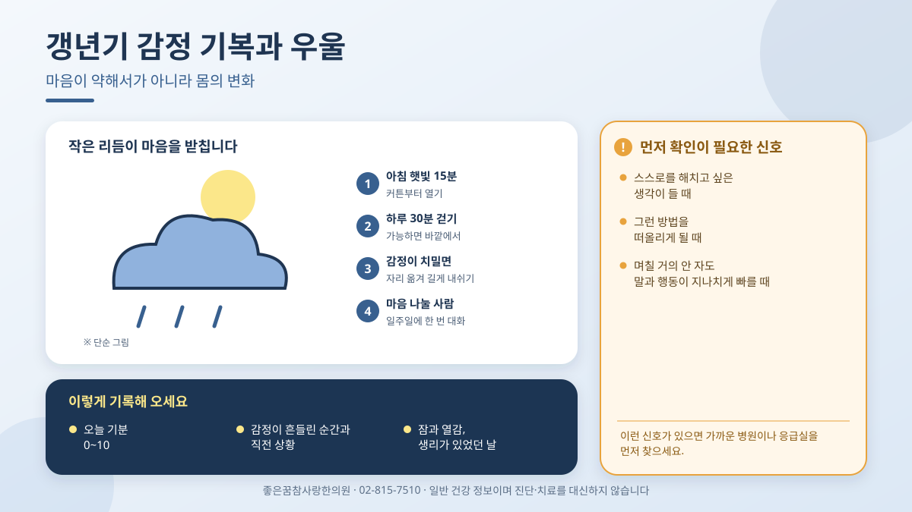

이종호 한의사 감수좋은꿈참사랑한의원 대표원장 (한의사 면허번호 19769)발행 2026-11-26 · 수정 2026-11-27
이 글의 차례
저녁 드라마를 보다가 별것 아닌 장면에서 눈물이 왈칵 쏟아집니다. 낮에는 남편이 무심코 한 말 한마디에 가슴이 확 뜨거워지며 큰소리가 나갔고요. 돌아서면 미안하고, 미안한 마음에 또 우울해집니다. '내가 왜 이러지' 하는 생각이 하루에도 몇 번씩 들죠.
갱년기 무렵 진료실에 오시는 분들 가운데 상당수가 이런 얘기를 조심스럽게 꺼내세요. 몸이 화끈거리고 잠이 얕아지는 얘기는 쉽게 하시면서도, 마음이 흔들리는 얘기는 한참을 망설이다가 하시거든요. 그 망설임 속에는 '이런 걸로 와도 되나' 하는 마음이 담겨 있어요.
저는 그 마음을 잘 압니다. 그래서 이 말부터 드려요. 갱년기에 감정이 출렁이는 건 성격이 변해서도, 마음이 약해져서도 아니에요. 몸속 호르몬이 크게 달라지는 시기에 마음도 같이 흔들리는 건 원래 그래요. 아주 자연스러운 일이에요.
그러니까 사실은 두 가지를 나눠서 보셔야 해요. '감정이 출렁이는 것'과 '마음이 오래 가라앉아 있는 것'은 다른 얘기거든요. 앞의 것은 이 시기에 많은 분이 겪는 일이고, 뒤의 것은 조금 더 차분히 들여다봐야 하는 일이에요.
출렁임이 너무 크거나 오래 이어져 일상이 버거워진다면, 그때는 한 걸음 더 들여다보시죠. 이 글에서는 갱년기 감정 기복과 우울이 어떻게 다른지, 왜 생기는지, 가족과 함께 무엇을 할 수 있는지를 차례로 정리했습니다.
갱년기 감정 기복은 어떤 모습으로 오나요?
가장 흔한 모습은 감정의 폭이 커지는 것입니다. 예전 같으면 웃어넘겼을 일에 화가 치밀고, 별일 아닌 장면에 눈물이 납니다. 기분이 좋다가도 몇 시간 뒤 이유 없이 가라앉습니다. 감정이 롤러코스터를 탄다고 표현하시는 분이 많습니다.
예민함도 커집니다. 소리와 냄새, 사람들의 말투가 평소보다 거슬리고, 혼자 있고 싶은 마음이 자주 듭니다. 가족이 다가오면 귀찮은데, 막상 혼자 있으면 외롭고 서운합니다. 이런 엇갈린 마음 때문에 스스로도 어찌할 바를 모르겠다고 하십니다.
몸의 신호가 함께 오는 경우도 많습니다. 열이 확 오를 때 짜증도 함께 치밀고, 잠을 설친 다음 날 감정이 더 날카로워집니다. 가슴이 답답하고 두근거리며, 목에 뭔가 걸린 듯한 느낌을 말씀하시는 분도 계십니다.
왜 갱년기에 마음이 흔들릴까요
여성호르몬은 뇌에서 기분을 조절하는 물질들과도 깊이 이어져 있습니다. 에스트로겐은 마음을 안정시키는 세로토닌이 잘 일하도록 돕고, 프로게스테론은 긴장을 누그러뜨리는 쪽으로 작용합니다. 갱년기에 이 호르몬들이 고르지 않게 오르내리면 감정의 바닥이 흔들리는 느낌이 들 수 있습니다.
생리 전마다 예민해지거나 출산 뒤 우울을 겪었던 분이라면 갱년기에도 감정 변화를 더 크게 느끼는 경우가 있습니다. 호르몬 변화에 마음이 민감하게 반응하는 체질일 수 있다는 뜻입니다. 지난 경험을 떠올려 말씀해 주시면 살피는 데 도움이 됩니다.
잠도 큰 몫을 합니다. 열감과 땀으로 밤에 여러 번 깨면 감정을 다독이는 힘이 줄어듭니다. 잠이 모자란 뇌는 작은 자극에도 크게 반응하고, 부정적인 생각에 더 오래 머뭅니다. 그래서 감정 이야기를 하시는 분께는 잠을 꼭 함께 여쭙습니다.
삶의 변화도 겹칩니다. 자녀가 독립해 집이 조용해지고, 부모님의 건강을 돌보게 되고, 직장에서 자리가 달라지는 시기입니다. 몸이 변하는 것을 보며 나이 듦에 대한 서운함이 밀려오기도 합니다. 호르몬과 잠, 삶의 무게가 한꺼번에 얹히니 마음이 흔들리는 것은 어쩌면 당연한 일입니다.
감정 기복과 우울은 어떻게 다를까요?
감정 기복은 기분이 오르내리지만 좋은 순간도 분명히 있는 상태입니다. 친구와 수다를 떨면 즐겁고, 맛있는 것을 먹으면 기분이 나아집니다. 힘들기는 해도 일상은 대체로 이어집니다.
우울은 기분이 바닥에 오래 머무는 상태입니다. 2주 넘게 거의 매일 가라앉아 있고, 예전에 좋아하던 일에도 흥미가 없으며, 아침에 일어나는 것 자체가 버겁습니다. 입맛과 잠이 크게 달라지고, 내가 쓸모없다는 생각이나 죄책감이 자꾸 듭니다.
둘 사이의 경계가 늘 뚜렷하지는 않습니다. 감정 기복으로 시작했다가 잠과 체력이 무너지면서 우울로 이어지는 경우도 있습니다. 그래서 '그냥 갱년기라서'라고 넘기기보다, 지금 내 마음이 어디쯤 있는지 한번 짚어 보시길 권합니다.
갑상선 기능이 떨어지면 무기력과 우울감이 함께 오고, 빈혈이 있어도 피로와 의욕 저하가 겹칠 수 있습니다. 몸의 문제가 마음처럼 보이는 경우가 있어, 오래된 건강검진 결과가 있다면 가져와 주세요.
스스로 살펴볼 수 있는 점
아래 질문에 답해 보시면 지금 마음의 상태를 가늠하는 데 도움이 됩니다.
- 기분이 가라앉은 날이 지난 2주 동안 거의 매일이었나요?
- 예전에 즐겁던 일에 흥미가 없어졌나요?
- 잠과 입맛이 크게 달라졌나요?
- 내가 쓸모없거나 짐이 된다는 생각이 자주 드나요?
- 열감이나 잠을 설친 날 감정이 더 크게 흔들리나요?
- 생리 주기와 기분 변화가 겹치나요?
앞의 네 가지에 여러 개 해당된다면 마음이 많이 지쳐 있는 상태일 수 있어, 잠과 소화, 긴장을 함께 살피며 이야기를 천천히 나눠 봅니다. 뒤의 두 가지가 두드러진다면 호르몬 변화와 잠을 함께 살피는 쪽으로 이야기를 이어 갑니다.
자주 듣는 오해 몇 가지
첫째, 마음을 굳게 먹으면 이겨 낼 수 있다는 생각입니다. 의지가 중요하지 않다는 것은 아니지만, 호르몬과 잠이 흔들리는 상태에서 마음만 다잡으려 하면 오히려 나를 더 몰아세우게 됩니다. 몸을 먼저 챙기면 마음이 따라오는 경우가 많습니다.
둘째, 남들도 다 겪는 일이니 참아야 한다는 생각입니다. 갱년기를 겪는 것은 같아도 그 무게는 사람마다 다릅니다. 누군가는 가볍게 지나가고, 누군가는 일상이 흔들릴 만큼 힘듭니다. 내가 힘들다면 그것으로 도움을 청할 이유는 충분합니다.
셋째, 마음이 힘들다고 말하면 큰일이 난 것이라는 생각입니다. 마음이 아플 때 누군가와 이야기를 나누는 것은 감기에 걸려 병원에 가는 것과 다르지 않습니다. 일찍 이야기를 나눌수록 마음이 덜 깊이 가라앉고, 회복의 길도 짧아질 수 있습니다.
넷째, 감정이 흔들리는 나를 가족이 다 이해해 줄 것이라는 기대입니다. 가족도 이 시기의 변화를 잘 모르는 경우가 많습니다. 서운함이 쌓이기 전에 지금 내 몸과 마음이 어떤지 조금씩 말로 건네 보시길 권합니다.
먼저 이렇게 여쭙니다
처음 오시면 저는 대략 이런 순서로 여쭙니다. 말씀하기 편한 것부터 들려주시면 됩니다. 순서는 상관없습니다.
- 기분이 달라진 것은 언제부터이고, 생리 변화와 시기가 겹치나요?
- 하루 가운데 언제 가장 힘드신가요?
- 잠과 입맛은 어떠신가요?
- 요즘 집이나 직장에서 마음 쓰이는 일이 있나요?
- 예전에 생리 전 예민함이나 출산 뒤 우울을 겪으신 적이 있나요?
- 드시는 약이나 받고 계신 상담, 호르몬 치료가 있나요?
이미 다른 병원에서 처방받은 약을 드시고 계시다면 처방한 선생님과 상의 없이 멈추지 않으시길 권합니다. 한의원 진료는 그 치료와 나란히 갈 수 있으니, 드시는 약을 알려 주시면 그에 맞춰 방향을 정합니다.
일상에서 먼저 해 볼 수 있는 것
마음이 흔들릴 때는 큰 결심보다 작은 리듬이 힘이 됩니다. 아래 가운데 지금 가장 쉬워 보이는 것 하나만 골라 보세요.
- 아침에 일어나 커튼을 열고 햇빛 15분 쬐기
- 하루 30분 안팎 걷기, 가능하면 바깥에서
- 일어나는 시각을 주말에도 일정하게 지키기
- 마음을 털어놓을 수 있는 사람과 일주일에 한 번 이야기 나누기
- 저녁 술은 감정을 더 출렁이게 하니 횟수부터 줄이기
- 하루에 한 번, 나를 위해 쓰는 시간 정해 두기
몸을 움직이는 것은 기분에도 직접 닿습니다. 걷는 동안 생각이 정리되고, 햇빛은 밤잠을 돕는 리듬을 만들어 줍니다. 처음에는 동네 한 바퀴로 시작하셔도 충분합니다. 기분이 내키지 않는 날에도 신발을 신고 현관 밖으로 나가는 것까지만 해 보세요.
감정이 확 치밀 때는 그 자리에서 바로 말하기보다 잠시 자리를 옮겨 숨을 길게 내쉬어 보세요. 넷을 세며 들이쉬고 여섯을 세며 내쉬기를 몇 번 하면 뜨거운 기운이 조금 가라앉습니다. 그다음에 말해도 늦지 않습니다.
감정을 글로 적는 것도 도움이 됩니다. 오늘 화가 났던 일, 서운했던 일, 고마웠던 일을 한 줄씩 적어 보세요. 머릿속에서 맴돌던 감정이 종이 위로 옮겨지면 한결 가벼워집니다. 몇 주 뒤에 다시 읽어 보면 감정의 흐름이 보이기도 합니다.
가족은 어떻게 도울 수 있을까요?
가족이 가장 먼저 해 줄 수 있는 것은 '갱년기라서 그래'라는 말을 아끼는 것입니다. 맞는 말이라도 듣는 사람에게는 내 마음을 가볍게 여긴다는 느낌으로 다가갈 수 있습니다. 대신 "요즘 많이 힘들지"라는 한마디가 훨씬 큰 힘이 됩니다.
집안일을 나누는 것도 큰 도움이 됩니다. 몸이 지친 상태에서 해야 할 일이 쌓이면 감정이 더 쉽게 터집니다. 저녁 설거지나 빨래 개기처럼 작은 일 하나를 맡아 주는 것만으로도 숨 쉴 틈이 생깁니다.
함께 걷는 시간을 만들어 보시는 것도 좋습니다. 마주 앉아 이야기하기는 어색해도, 나란히 걸으면 말이 자연스럽게 나오곤 합니다. 저녁 식사 뒤 동네 한 바퀴가 가족 모두에게 쉼이 될 수 있습니다.
감정이 터진 순간에는 맞서 따지기보다 잠시 시간을 두는 것이 좋습니다. 그 자리에서는 "잠깐 쉬었다가 이야기하자"고 말하고, 마음이 가라앉은 뒤 다시 대화를 나누면 서로 상처를 덜 남깁니다. 기분이 오래 가라앉아 보인다면 진료를 함께 가 보자고 먼저 손을 내밀어 주세요.
한의원에서 함께 살필 수 있는 경우
- 열감이나 얕은 잠과 함께 감정 기복이 커진 경우
- 가슴이 답답하고 두근거리며 목에 뭔가 걸린 느낌이 함께 있는 경우
- 예민함과 짜증이 늘고 몸이 늘 긴장되어 있는 경우
- 다른 병원 치료를 받으면서 잠, 소화, 몸의 불편을 함께 살피고 싶은 경우
- 생리 전후로 기분이 크게 오르내리는 흐름이 이어지는 경우
좋은꿈참사랑한의원에 오시면 맥을 짚고 잠과 열감, 소화, 마음의 흐름을 함께 여쭙습니다. 그 내용을 바탕으로 침, 긴장을 풀어 주는 관리, 한약 상담 가운데 지금 상태에 맞는 것을 진찰한 뒤 정합니다. 한약을 상의할 때는 드시는 약과 호르몬 치료 여부를 모두 확인하고 신중하게 정합니다.
한의원 진료는 산부인과 진료를 대신하지 않습니다. 호르몬 쪽 확인이 필요해 보이면 그쪽 진료도 함께 이어 가시도록 안내합니다.
이렇게 기록해 오시면 상담이 쉬워집니다
감정은 지나고 나면 흐릿해져서 기록이 큰 도움이 됩니다. 2주 정도 저녁에 한 줄씩 적어 보세요.
- 오늘 기분을 0에서 10으로
- 감정이 크게 흔들린 순간과 그 직전 상황
- 잠든 시각과 깬 횟수, 열감이나 땀
- 걷거나 움직인 시간
- 생리가 있었던 날
기록을 나란히 놓고 보면 잠을 설친 날, 생리 전후, 바쁜 날에 감정이 더 흔들리는 흐름이 보이곤 합니다. 그 흐름을 알면 '내가 이상한 게 아니구나' 하는 안도감도 함께 찾아옵니다. 좋았던 순간도 한 줄씩 함께 적어 두시면, 힘든 날에 다시 읽으며 마음을 붙잡는 데 쓸 수 있습니다.
흔들리는 마음을 다독이며
갱년기는 몸과 마음이 함께 새 균형을 찾아가는 시기예요. 흔들리는 게 이상한 일이 아니고, 도움을 청하는 게 약한 일도 아니에요. 혼자 버티지 마시고 가족과 주변, 그리고 진료실에 마음을 조금씩 나눠 주세요.
잠과 열감, 가슴 답답함처럼 몸에서 마음을 흔드는 부분은 제가 맡을게요. 대신 하나만 부탁드려요. 이번 주에는 아침 햇빛 15분이나 저녁 한 줄 기록 가운데 하나만 골라서 시작해 보세요. 둘 다 하려고 하지 않으셔도 돼요. 딴 건 하시던 대로 편하게 지내시면 됩니다.
세게 마음먹고 한꺼번에 바꾸려 하면 오히려 지치기 쉬워요. 약하게, 오래, 매일이면 충분해요. 작은 것 하나를 지켜 낸 하루는 그 자체로 잘 보낸 하루예요. 다음에 오시면 그 기록부터 함께 펼쳐 볼게요.
이런 증상은 먼저 확인이 필요합니다
- 스스로를 해치고 싶은 생각이 들거나 그런 방법을 떠올리게 되는 경우
- 며칠씩 거의 자지 않아도 지치지 않고 말과 행동이 갑자기 지나치게 빨라진 경우
이런 신호가 있으면 한의원보다 가까운 병원이나 응급실을 먼저 찾으세요.
마음이 많이 힘들 때는 자살예방상담전화 ☎ 109에서 언제든 이야기를 나눌 수 있습니다.
함께 읽으면 좋은 글
- 갱년기에 몸이 달라질 때 한의원에서는 무엇을 먼저 묻나요?
- 기분이 2주 넘게 가라앉고 잠·입맛·흥미가 떨어질 때는 어떻게 살피나요?
- 갱년기 무렵 갑자기 가슴이 두근거릴 때는 어떻게 살피나요?
- 생리 전 일주일마다 예민해지고 짜증이 늘 때는 어떻게 살피나요?
- 가슴이 두근거리고 불안할 때는 어떤 점을 먼저 확인하나요?

여쭙는 것
- 기분이 달라진 것은 언제부터이고, 생리 변화와 시기가 겹치나요?
- 하루 가운데 언제 가장 힘드신가요?
- 잠과 입맛은 어떠신가요?
생활에서 해 볼 것
- 아침에 일어나 커튼을 열고 햇빛 15분 쬐기
- 하루 30분 안팎 걷기, 가능하면 바깥에서
- 일어나는 시각을 주말에도 일정하게 지키기
한의원에서 함께 살필 것
- 열감이나 얕은 잠과 함께 감정 기복이 커진 경우
- 가슴이 답답하고 두근거리며 목에 뭔가 걸린 느낌이 함께 있는 경우
- 예민함과 짜증이 늘고 몸이 늘 긴장되어 있는 경우
먼저 확인이 필요한 신호
- 스스로를 해치고 싶은 생각이 들거나 그런 방법을 떠올리게 되는 경우
- 며칠씩 거의 자지 않아도 지치지 않고 말과 행동이 갑자기 지나치게 빨라진 경우
한눈에 보는 표
| 구분 | 핵심 |
|---|---|
| 여쭙는 것 | 기분이 달라진 것은 언제부터이고, 생리 변화와 시기가 겹치나요? 하루 가운데 언제 가장 힘드신가요? |
| 생활에서 해 볼 것 | 아침에 일어나 커튼을 열고 햇빛 15분 쬐기 하루 30분 안팎 걷기, 가능하면 바깥에서 |
| 한의원에서 함께 살필 것 | 열감이나 얕은 잠과 함께 감정 기복이 커진 경우 가슴이 답답하고 두근거리며 목에 뭔가 걸린 느낌이 함께 있는 경우 |
| 먼저 확인이 필요한 신호 | 스스로를 해치고 싶은 생각이 들거나 그런 방법을 떠올리게 되는 경우 며칠씩 거의 자지 않아도 지치지 않고 말과 행동이 갑자기 지나치게 빨라진 경우 |
자주 묻는 질문
갱년기 감정 기복은 시간이 지나면 괜찮아지나요?
호르몬 변화가 자리를 잡으면서 덜해지는 분이 많습니다. 다만 우울이 2주 넘게 깊게 이어진다면 기다리기보다 진료실에서 그 이야기를 먼저 꺼내 주세요. 잠과 긴장을 함께 살피며 순서를 정합니다.
우울증 약을 먹고 있는데 한의원 진료를 받아도 되나요?
드시는 약을 알려 주시면 그에 맞춰 진료 방향을 정합니다. 약은 처방한 선생님과 상의 없이 멈추지 않으셔야 합니다.
가족에게 어떻게 말을 꺼내면 좋을까요?
"요즘 몸이 이렇게 달라졌고, 그래서 마음도 흔들린다"처럼 몸의 변화부터 이야기하면 듣는 쪽도 이해하기 쉽습니다. 이 글을 함께 읽어 보시는 것도 방법입니다.
호르몬 치료를 받으면 감정 기복도 줄어드나요?
사람마다 다르고, 호르몬 치료는 산부인과에서 몸 상태를 살펴 정하는 일입니다. 받고 계시거나 고민 중이시라면 알려 주세요. 한의원 진료는 그 흐름과 나란히 정합니다.
좋은꿈참사랑한의원은 재진 때 지난번 이야기부터 이어서 여쭙니다. 진료시간과 예약은 오시는 길에서 확인하세요.
어디서 상담받을 수 있나요?
좋은꿈참사랑한의원은 서울 동작구 만양로2길 2 신성빌딩 3층·5층(서울 동작구 상도동, 7호선 상도역 3번 출구 근처)에 있습니다. 한의사 3명(이종호 대표원장, 조영기 수석진료원장, 정원영 진료원장)이 진료합니다. 진료시간은 평일 09:30~20:00(점심 13:00~14:00), 토·일·공휴일 09:30~15:00이며, 방문 전 전화로 확인을 권합니다. 예약은 네이버 예약, 카카오톡 상담, 전화 02-815-7510로 받습니다.
이 글은 일반적인 건강 정보이며 개인의 진단이나 치료를 대신하지 않습니다. 증상이 있거나 복용 중인 약이 있다면 진료를 통해 확인하세요. 치료 효과는 개인마다 다를 수 있습니다.
작성 기준: 일반적으로 알려져 있는 건강 정보를 참고해 정리했습니다(대표원장 감수). 증상 기록은 1~2주 동안 하루 1회, 비슷한 시간에 적어 오시면 지난 상태와 비교하기 쉽습니다.